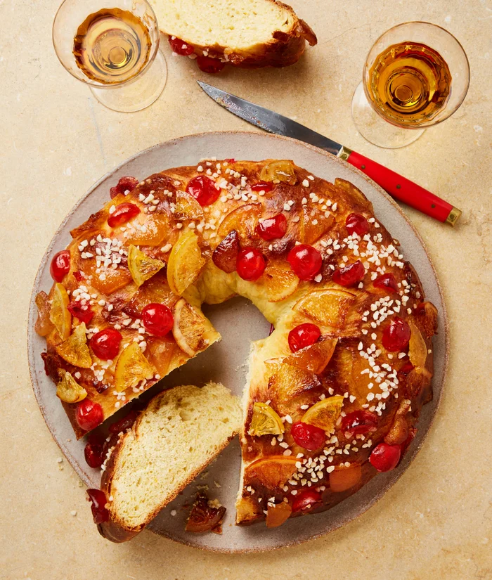

Roscon de Reys (Espanha / México)
Ingredientes
Massa
- 500 g de farinha de trigo
- 20 g de fermento biológico fresco (ou 7 g seco)
- 120 ml de leite morno
- 120 g de açúcar
- 100 g de manteiga em temperatura ambiente
- 1 colher (sopa) de água de flor de laranjeira (essencial!)
- 2 ovos
- Raspas de 1 laranja
- Raspas de 1 limão
- 1 pitada de sal
Decoração
- 2 ovos
- 1 ovo batido (para pincelar)
- Frutas cristalizadas coloridas (tradicional)
- Açúcar umedecido com algumas gotas de água
- Amêndoas laminadas (opcional)
Recheio (opcional)
- Creme de confeiteiro ou chantilly
Modo de Preparo
- Misture o fermento com o leite morno e 1 colher de sopa de açúcar. Deixe espumar por 10 minutos.
- Em uma tigela grande, coloque a farinha, o açúcar, o sal e as raspas de limão e laranja.
- Adicione a mistura de fermento, os ovos e a água de flor de laranjeira.
- Misture e acrescente a manteiga. Sove por 10 minutos até a massa ficar lisa e elástica.
- Cubra e deixe descansar por 1h a 1h30, até dobrar de volume.
- Faça uma bola com a massa. Abra um buraco no centro e modele o formato de aro/coroa.
- Coloque em uma assadeira com papel manteiga. Deixe fermentar mais 45 minutos.
- Pincele com o ovo batido e decore com frutas cristalizadas, açúcar umedecido e amêndoas.
- Asse a 180°C por 25–30 minutos, até dourar.
- Depois de frio, corte ao meio e recheie com creme de confeiteiro ou chantilly (opcional).
 3h
•
3h
•
 Serve 12 pessoas
•
Serve 12 pessoas
•
 Médio
Médio